Previous Recipe
Macher chop / Fish Croquettes / Fish Chop / Fish Cake
© 2016 Spicy World, Published on: Jan 13, 2016
We, Bengalis, love to eat fish in many forms. One of the popular snack of West Bengal is 'macher chop'. Spicy crumbled fish inside and crispy coating outside - scrumptious !! We both usually enjoy this snack in the evening along with a cup of tea or with a can of beer. Both combos are unbeatable. If you have to impress any Bengali ever in your life, just indulge him/her in 'Bikeler adda' (evening gossip), 'a cup of tea', Macher chop' and 'Rabindra sangeet'. I can gurantee he/she will request you to arrange another meeting soon 😉. Try this in your kitchen and enjoy a special evening with your loved ones.

Ingredients
- 2 pieces of fish with bone (bhetki / rui / katla).
- 1 boiled potato.
- 1 egg.
- Bread crumbs.
- Little turmeric powder.
- 2 green chilies.
- 1 inch ginger chopped.
- Half onion finely chopped.
- Spice powder (1 Teaspoon roasted cumin powder, 1/2 Teaspoon garam masala, 1 Teaspoon red chili powder and pinch of chat masala).
- Salt.
- Some chopped coriander leaves.
- 7 Teaspoons mustard oil.
- White oil for deep fry.

Steps
Rub the fish pieces with turmeric powder and some salt. Keep it for 5 minutes.
Heat the mustard oil in a pan.
Fry thy fish pieces both sides for 5-6 minutes. Remove those in a plate and let it become cool.
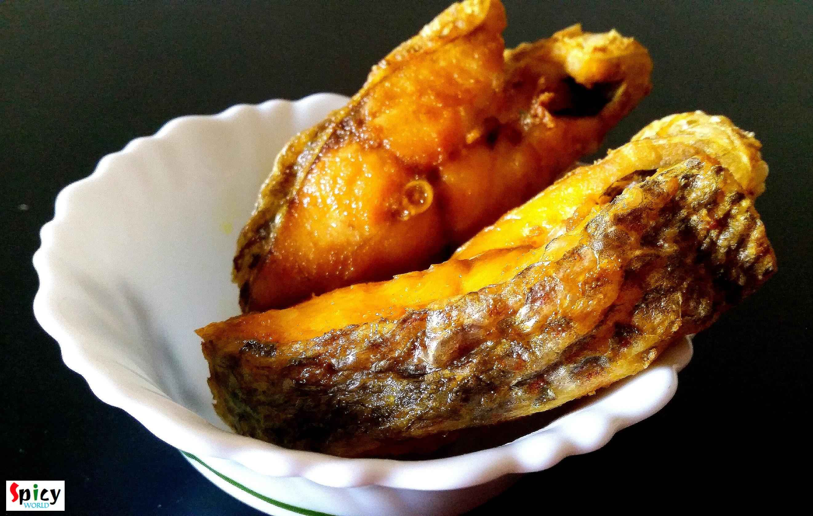
Now discard the skin and debone the fish pieces. Make the fish crumble a little bit.
Mash the boiled potato with your hand and keep aside.
In 2 Teaspoons of same oil, add chopped ginger. Saute it for a minute.
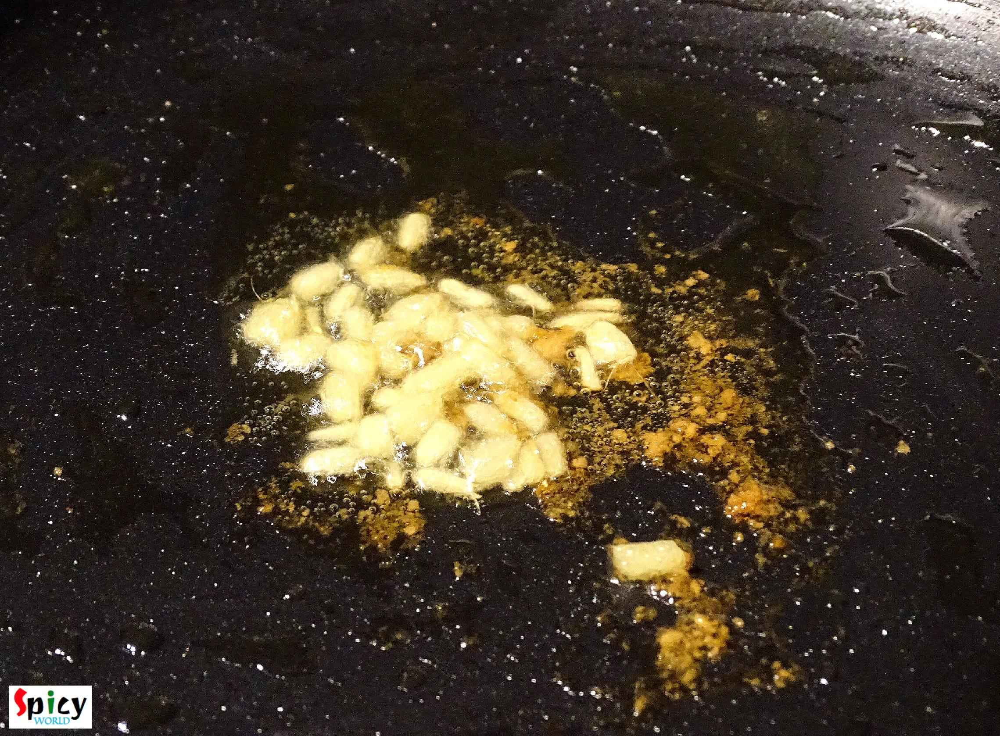
Then add chopped onion. Fry it for 5-6 minutes.
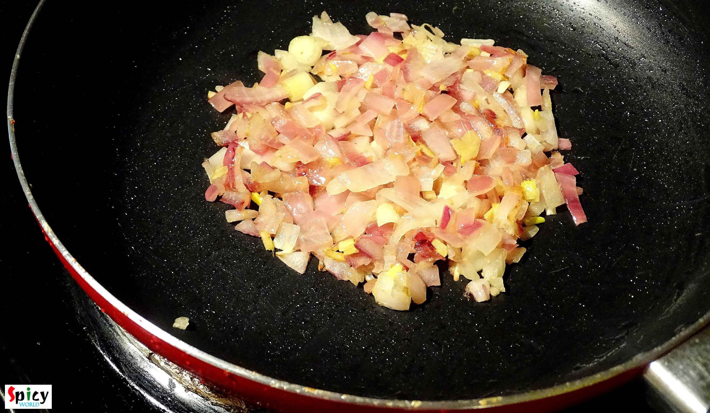
Add the mashed potato and crumbled fish. Mix this very well.
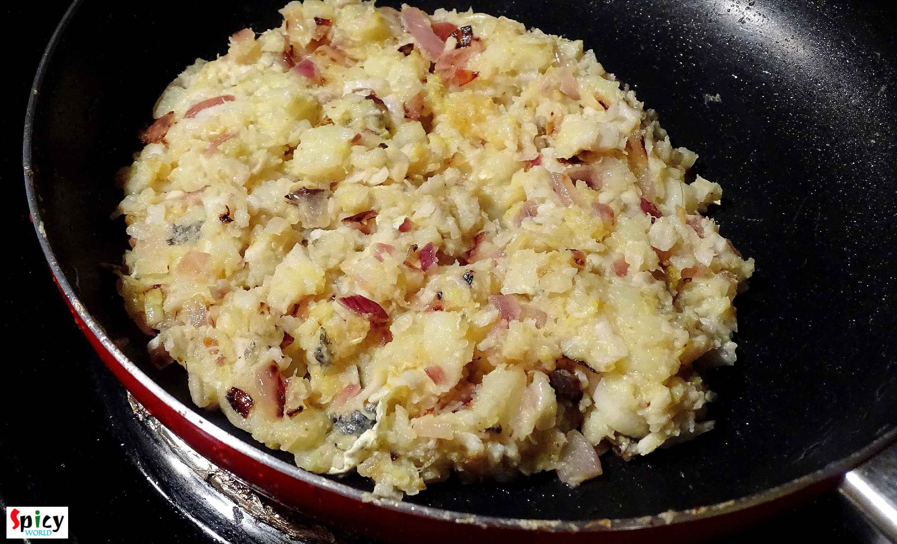
Add all the spice powder and salt. Mix well.
Check the seasoning and adjust it according to your taste.
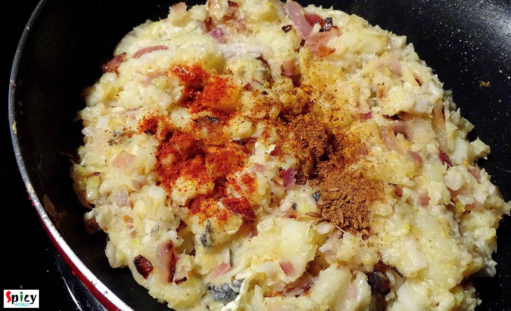
Lastly add chopped coriander leaves and green chilies. Mix well and turn off the heat.
Let this mixture cool down completely.
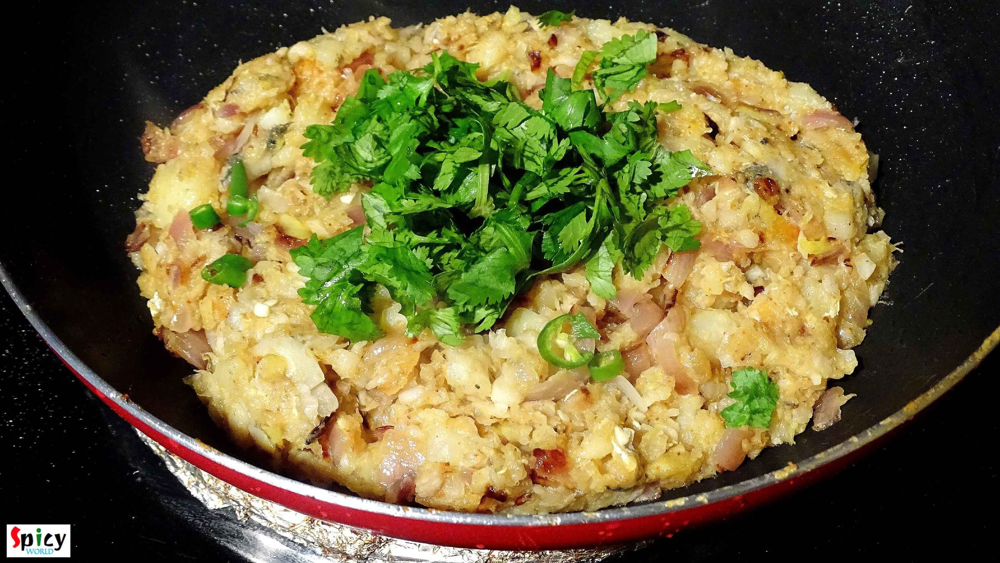
Then make some croquettes out of the mixture. You can give them any shape.
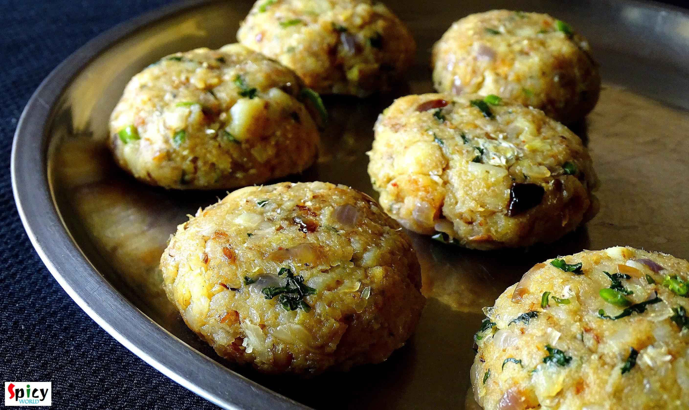
Take a bowl. Beat an egg with pinch of salt.
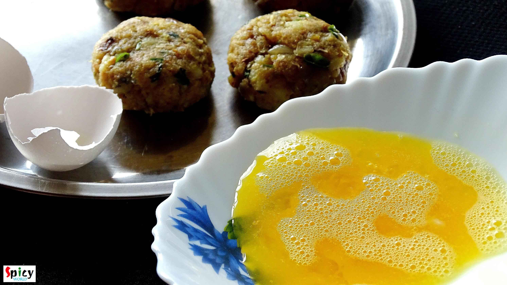
Now dip one croquette in the beaten egg and then roll it in bread crumbs.
Again dip it in the egg and coat it with bread crumbs.
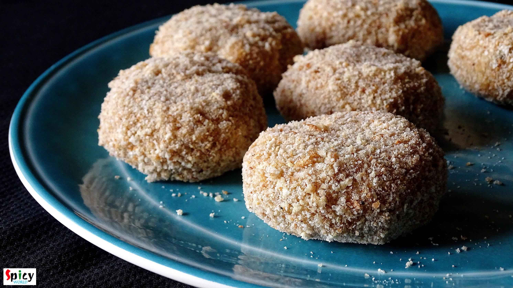
Let those coated chops rest for 10 minutes.
Then fry those one by one in hot white oil for 5 minutes.
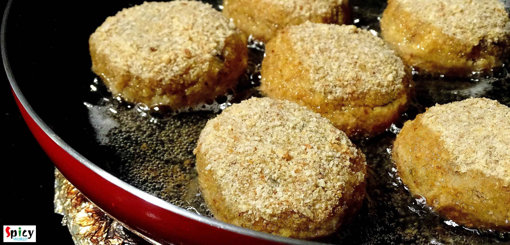
Remove them in a paper towel, sprinkle some chat masala and serve.
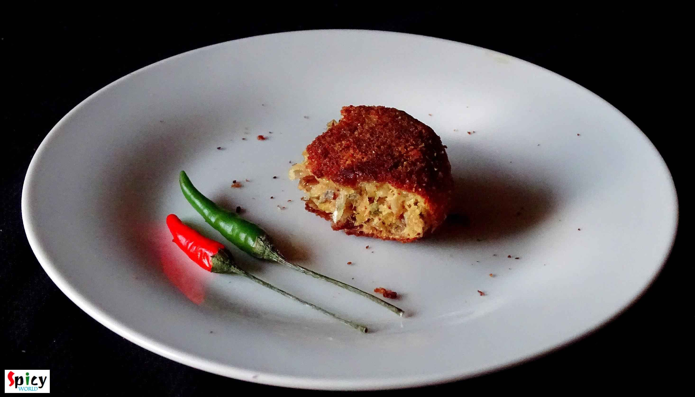
Your Fish Chop is ready ...
- Enjoy this hot with some onion chunks, ketchup or kasundi ...
")
Previous Recipe